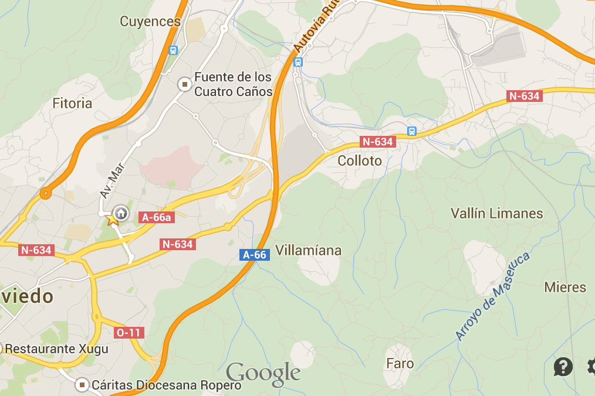

Desplegar navegación
Logotipo
Enlace #1
Enlace #2
Menú #1
Acción #1
Acción #2
Acción #3
Acción #4
Acción #5
Enviar
Enlace #3
Menú #2
L01
El Cerillero - Hospital de Cabueñes
L02
El Corte Inglés - Hospital de Cabueñes
L04
El Lauredal - Campus Universitario
L06
El Musel - Pol. Porceyo/Porceyo
L10
Pumarín - Somió/Hospital de Cabueñes
L12
El Cerillero - Contrueces
L14
Sotiello - Tremañes - Infanzón
L15
Nuevo Roces - Hospital de Cabueñes
L16
Estación de Ferrocarril - Vega
L18
Nuevo Gijón - Hospital de Cabueñes
L20
Nuevo Roces - Montevil - Somió (La Pipa)
L21
Hospital de Jove - La Campa Torres
L24
San Andrés/Montena - La Pedrera/Mareo
L25
Tremañes - Infanzón
L26
Gijón - Deva

Autobuses
L01
El Cerillero - Hospital de Cabueñes
L02
El Corte Inglés - Hospital de Cabueñes
L04
El Lauredal - Campus Universitario
L06
El Musel - Pol. Porceyo/Porceyo
L10
Pumarín - Somió/Hospital de Cabueñes
L12
El Cerillero - Contrueces
L14
Sotiello - Tremañes - Infanzón
L15
Nuevo Roces - Hospital de Cabueñes
L16
Estación de Ferrocarril - Vega
L18
Nuevo Gijón - Hospital de Cabueñes
L20
Nuevo Roces - Montevil - Somió (La Pipa)
L21
Hospital de Jove - La Campa Torres
L24
San Andrés/Montena - La Pedrera/Mareo
L25
Tremañes - Infanzón
L26
Gijón - Deva